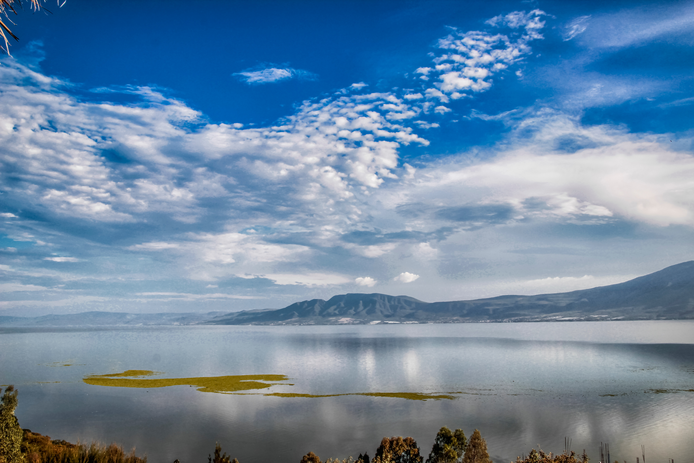
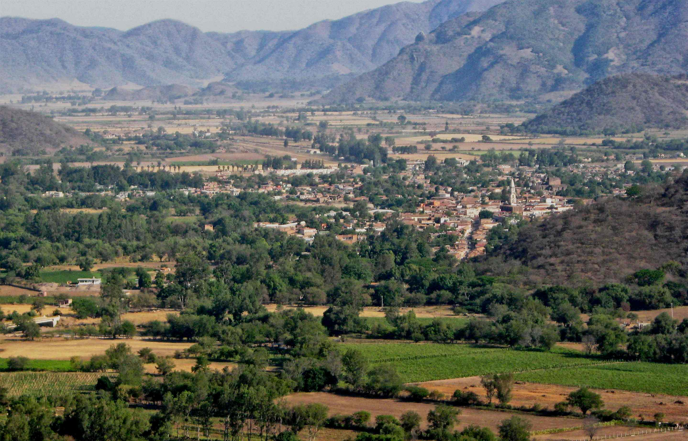

Geografia y Datos Generales de JaliscoUn territorio diverso que influye en la cultura y la economia del estado |
"Un estado diverso por su relieve, su clima y su riqueza natural"
Inicio | Historia | Cultura | Lugares Turisticos | Gastronomia | Geografia y Datos
| Accesos rapidos | ||
|---|---|---|
| Datos generales | Imagenes | Ampliacion |
Jalisco se localiza en el occidente de Mexico y es un estado muy importante por su tamano, su poblacion y su actividad economica. Su ubicacion le permite contar con regiones muy distintas, desde zonas costeras junto al oceano Pacifico hasta areas montanosas, valles, lagos y grandes ciudades.
Esta diversidad geografica ha influido en la cultura, el turismo, la agricultura y el desarrollo de sus principales municipios.
| Aspecto | Descripcion |
|---|---|
| Capital | Guadalajara |
| Region del pais | Occidente de Mexico |
| Paisajes | Playas, sierras, valles, lagos, zonas urbanas y regiones agricolas |
| Clima | Varia segun la region: puede ser calido, templado o mas fresco en zonas altas |
| Actividades destacadas | Turismo, comercio, agricultura, industria, tecnologia y servicios |
| Rasgo geografico destacado |
|---|
| Jalisco reune costa, ciudades, lagos, zonas agricolas y regiones montanosas dentro de un mismo estado. |
El relieve de Jalisco es muy diverso. En su territorio existen montanas, barrancas, costas, valles y lagos, lo que permite una gran variedad de paisajes y ecosistemas. Esta riqueza natural favorece tanto el turismo como distintas actividades economicas.
Lugares como el Lago de Chapala, la costa del Pacifico y las regiones agaveras muestran como la naturaleza influye en la vida del estado. Tambien existen bosques y areas que ayudan a conservar la biodiversidad.
El clima de Jalisco cambia dependiendo de la region. En la costa el ambiente suele ser mas calido, mientras que en otras zonas, especialmente en areas elevadas, se pueden presentar temperaturas mas frescas. Esta variedad climatica favorece la existencia de distintos cultivos y ambientes naturales.
Gracias a estas condiciones, el estado produce una gran cantidad de recursos agricolas y cuenta con regiones aptas para el turismo y la vida urbana.
La geografia de Jalisco ha influido directamente en su desarrollo. Las zonas urbanas han favorecido el comercio, la educacion y la industria, mientras que las regiones agricolas han impulsado el cultivo y la produccion de alimentos. Por su parte, la costa y los paisajes naturales han promovido el turismo.
Esto demuestra que el territorio no solo define el paisaje, sino tambien la economia y la forma de vida de las personas.
| Vistazo |
|---|
|
 |
|
 |
La geografia de Jalisco permite entender por que el estado posee tanta diversidad en su vida economica y cultural. No es lo mismo una region costera dedicada al turismo que una zona urbana con fuerte actividad comercial o una region agricola donde destacan los cultivos y la produccion local. Cada espacio tiene caracteristicas particulares, pero todos se relacionan para formar la identidad general del estado.
Tambien es importante mencionar que la variedad de climas y paisajes influye en la forma de vida de la poblacion. Las actividades productivas, la alimentacion, el tipo de vivienda y la organizacion de algunas comunidades cambian segun el entorno natural. De esta manera, la geografia no es solo el estudio del territorio, sino tambien una forma de comprender como viven y se desarrollan las personas en cada region.
Por eso, analizar la geografia de Jalisco ayuda a valorar su riqueza natural y a reconocer la relacion que existe entre paisaje, economia, cultura y desarrollo. La diversidad territorial del estado es una de las razones por las que Jalisco ocupa un lugar tan importante dentro de Mexico.
| Dato geografico curioso | |
|---|---|
| * | La gran variedad de paisajes en Jalisco influye directamente en sus actividades economicas, su turismo y hasta en algunos rasgos de su gastronomia y su cultura. |
Mas informacion general:
Informacion general de Jalisco